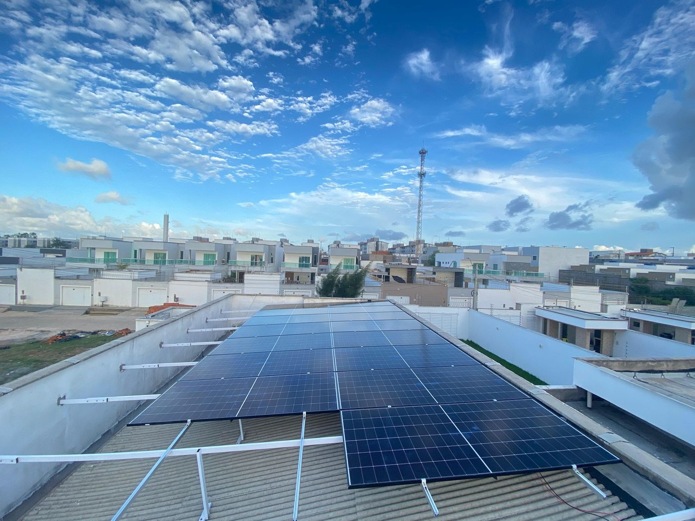
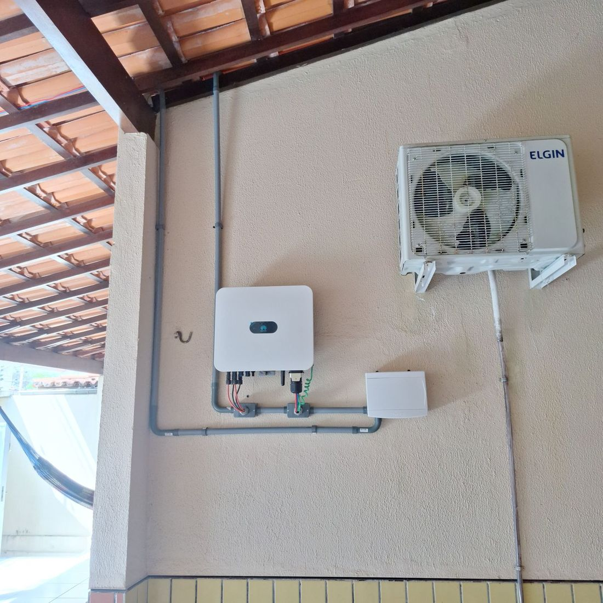
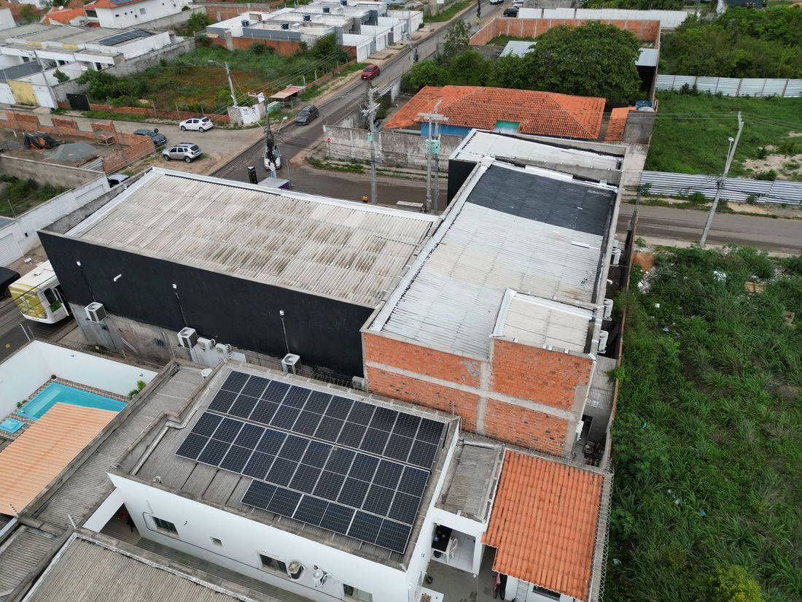

Residencial
Sistema em telhado de casa, para reduzir a conta de energia.
Energia solar fotovoltaica
Dimensionamos, instalamos e colocamos o seu sistema fotovoltaico para funcionar, com projeto aprovado e ART. O atendimento é pela marca Voltarc Solar.

O escopo exato de cada obra vem na proposta.
Atendimento pela marca Voltarc Solar (@voltarcsolar).
Qual sistema é o seu?
O porte muda o projeto e o caminho da aprovação. Na conversa vemos o que cabe no seu caso.
Sistema em telhado de casa, para reduzir a conta de energia.
Sistema para lojas, academias, escolas e indústrias, com projeto e homologação.
Projeto e subestação para sistemas de maior porte, conectados à rede da Equatorial.
Como funciona
O prazo depende do porte do sistema e da análise da concessionária. Você acompanha cada etapa.
Obras


Normas
O sistema só entra em operação depois de homologado pela concessionária.
Sim. Protocolamos o projeto, respondemos às exigências, acompanhamos a vistoria e a troca do medidor, conforme a NT.020 da Equatorial.
O sistema conectado à rede gera durante o dia, e a energia que você não usa vira crédito na conta, conforme as regras da Lei 14.300/2022. À noite, você usa a energia da rede. Por segurança, o sistema conectado à rede desliga quando a rede cai.
Depende do seu consumo, do espaço e da orientação do telhado. Mande uma conta de energia recente pelo WhatsApp que dimensionamos.
Depende do porte e do escopo, então não há preço fechado sem conhecer o caso. Mande os dados pelo WhatsApp e retornamos com a proposta.
Uma conta recente, a cidade e o tipo de telhado já bastam para começar.